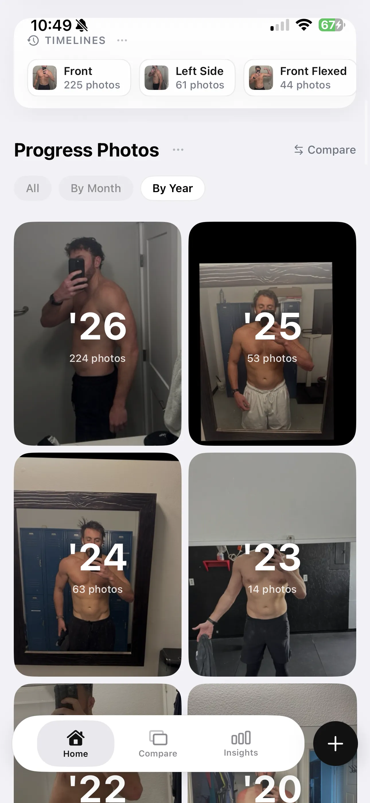
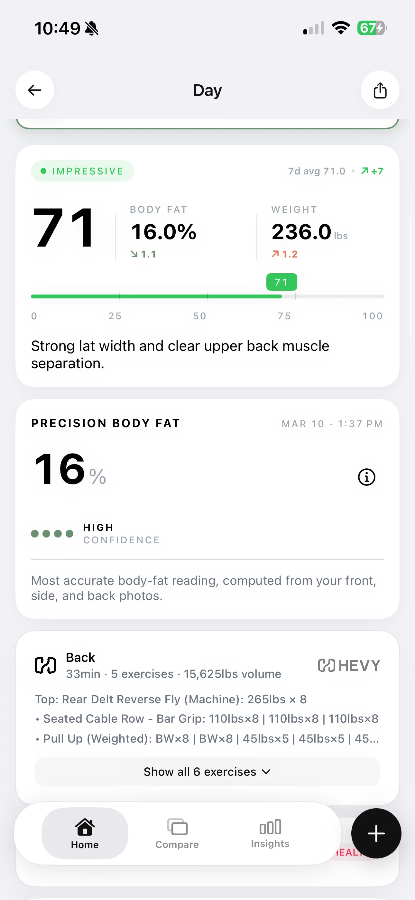
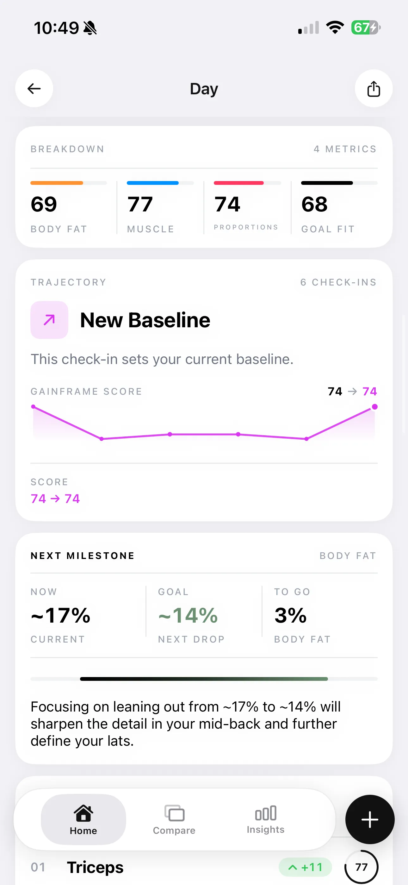
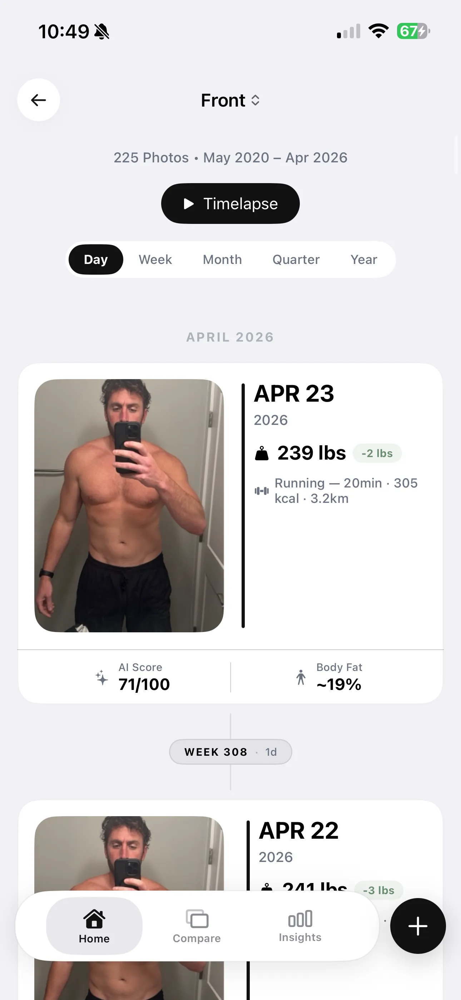

Which App Has the Best Before-and-After Transformations for Men?
Most apps just stitch two sloppy selfies together. A real transformation requires exact alignment, clear poses, and hard data proving your progress.

You step on the scale and it says you lost a pound. You look in the mirror and think you look leaner. But when you pull up a progress photo from last month to verify the hard work, it is a messy, poorly-lit guessing game.
That is the reality of trying to track a male physique transformation with a standard camera roll. The problem isn't your progress. The problem is the tool.
If you want to know which app has the best before-and-after transformations for men, you have to look at what actually goes into creating a compelling comparison. It requires deep organization, data extraction, and visual alignment.
Where Most Fitness Apps Fall Short
The fitness app ecosystem is fragmented. MyFitnessPal is the gold standard for tracking nutrition, but it has notoriously poor support for detailed progress pictures. You can log every calorie, but you can't easily visualize what those calories did to your body.
Hevy is exceptional for tracking workouts and ensuring progressive overload. However, it lacks the specialized tools required to track actual physique changes over time.
Web-based tools like BodyFatAi.app are great for a one-off body fat estimate. Unfortunately, they are practically useless for tracking trends and tracking the subtle changes that happen week over week.
Why You Need a Dedicated Physique Tracker

Your camera roll is chaos. A dedicated tracker makes it easy to organize hundreds of progress pictures and navigate them quickly. Instead of scrolling past screenshots and pet photos, your physical progress is perfectly structured.
GainFrame solves this by categorizing your historical pictures based on specific poses. When you want to see how your back has developed, you only see back photos. Everything is organized and easy to compare.
The app provides built-in tools to easily compare pictures and adjust the images so they line up perfectly. You are no longer left guessing if your shoulders actually got wider or if you just held the phone closer to the mirror.
Data Overlay: Body Fat and Workouts

A real transformation requires context. A photo alone is subjective, but a photo with data attached becomes objective evidence.
GainFrame extracts your body fat percentage and muscle breakdown directly from the photo. It also pulls in your workout data from Apple Health or Hevy, so you know exactly what you lifted on the day that photo was taken.
This creates a complete picture of your fitness journey. You aren't just looking at a leaner torso; you are seeing the exact data that created that change.
Tracking Trends and Visualizing Timelines

A single photo doesn't tell the full story. You need to see the trend from your last few check-ins to know what direction you are headed. GainFrame shows you exactly how your muscle breakdown and body fat are shifting over time.
To truly see a transformation, you need to scroll through a timeline of your progress pictures. Seeing your body change alongside your weight and body fat metrics makes the hard work undeniable.

The most powerful feature for motivation isn't just looking at the past—it's looking at the future. GainFrame includes a Future Physique feature that allows you to generate what you would look like if you stuck to specific workout plans.
Instead of hoping your current routine works, you can visually project the outcome. It bridges the gap between today's effort and tomorrow's result.
Generating Shareable Proof

When you are ready to show your progress, you need more than a stitched-together collage. You need a way to present your hard work with authority.
GainFrame renders beautiful, data-rich cards made specifically for sharing to social media. When you post your progress, you aren't just posting two photos. You are posting your stats, your timeline, and the verified visual evidence of what you built.
Stop relying on messy camera rolls and generic collage apps. Build your transformation with precise alignment and hard data.
Stop guessing if you're growing.
Get the only app that proves your progress with AI precision.
Download GainFrame